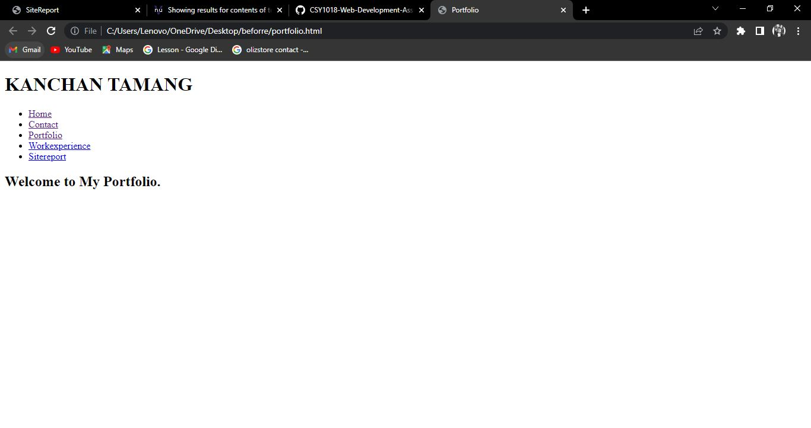

My Experience Learning Web Development.
I have always been an enthusiast in learning new things.I have quite an interest in Computer and coding too.My aim is to be a UX designer.Therefore i am enhancing my skills and learning whenever i get the opportunity.After joining NAMI College,I have got quite a lot of opportunity to learn new things. One of them being able to learn Web Designing.
I find Web Designing a very interesting Course.Since it is a very essential part of the internet getting the chance to learn and design website has been quite fun. I went through an emotional rollercoaster ride during learning this module but whenever i was facing any trouble there was my module instructor Mr. Ankit Thapa to help me with the problems i faced while coding.During his unavailabilty i seeked internet for help too.I had quite a difficulty in coding earlier on but slowly I grew fond of it.I faced a lot of trouble while creating navbar but luckily ankit sir helped me out and I was able to fix the problem.In this module i have learned the basics of coding and programming and with the help of my assignment i have enhanced my web development skills even more.In this module i learned everything there is to in HTML and CSS.With more skill-practice,experience,enthusiasm and dedication i think everyone can make a carrer out of it.Web designing can be a difficult subject to understand but once you get the hang of it, it is very fun and interesting subject to learn!
Making Navigation Bar:
This was the most challenging part of the assignment.Making a navigation bar is not what we were used to of.Ihad many troubles making navigation bar.To make the navigation bar i took help from ankit sir and after learning from him i gave it my own shot.It isn't that porfessional but i gave it a shot.
Making Home page
Since we all know first impression is the last impression,the homepage is the front face of a website.I have kept it simple but tried to make it a little more elegant.
BEFORE:

AFTER:
Making Contact Page
For my contact page, i have added animated card.
BEFORE:
AFTER:
Making portfolio
For my portfolio, i have added my photos.
BEFORE:
AFTER:
Making Workexperience
For my workexpereince,i have added my work experiences from different fields.
BEFORE:
AFTER:
Index page Validation

Contact Page Validation
Workexperience Validation